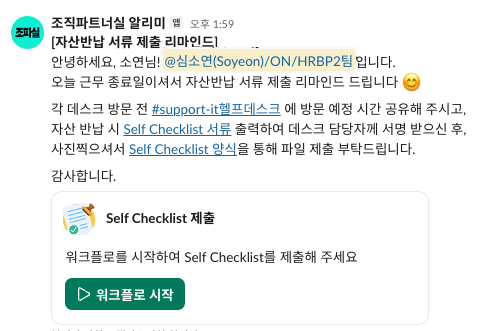
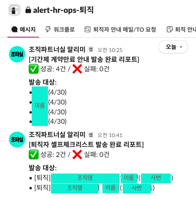
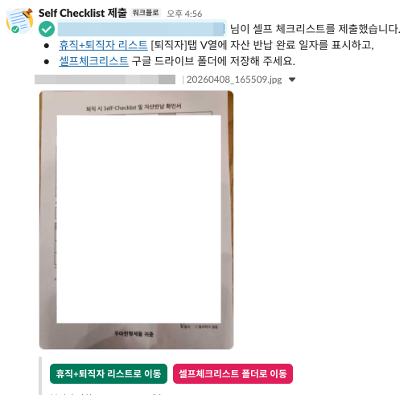

파견직 계약 만료 안내의
AI를 활용한 완전 자동화
HRBP2팀이 운영 중인 Apps Script 기반 알림 자동화
구성원에게는 슬랙·메일로, 담당자에게는 발송 리포트로.



5개 플로우 · 2개 트리거를 공통 유틸 구조로 운영 중.
→ 이 구조 위에서, 시스템 밖 업무를 풀어봅니다.
Workday/우아한인사에 없음 →
수시로 시트 확인 필요
매번 조직장·담당자에게
개별 작성·발송
'연장 가능' vs '불가' 문구가 다름 →→
휴먼 에러 위험
만료일 놓치는 경우,
이슈 발생
Claude × Gemini로 코드 설계 · 디버깅
기존 Google Sheets 자산 활용
비고 내 '연장 가능 / 불가' 값으로 본문 자동 선택
AC=TRUE & AL≠TRUE 인 행만 대상자로 추출 (만료 D-42)
같은 조직장에게 만료자가 N명이면 1통의 메일 + 표로 통합
'연장 가능' 여부에 따라 본문 섹션 자동 선택
메일 전송 성공 시 AL=TRUE 기록 → 중복 발송 방지
운영 담당자 채널에 성공·실패·상세 내역 자동 공유
시트의 '비고' 한 칸이 발송될 메일 전체를 결정합니다.
파견직 계약만료 안내 메일 자동 발송
총 계약 기간 23개월 미만 — normalSection 본문 자동 적용
총 계약 기간 23개월 이상 — forcedExpireSection 본문 자동 적용